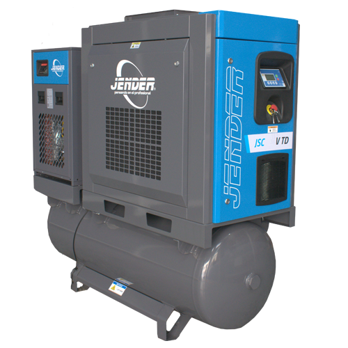
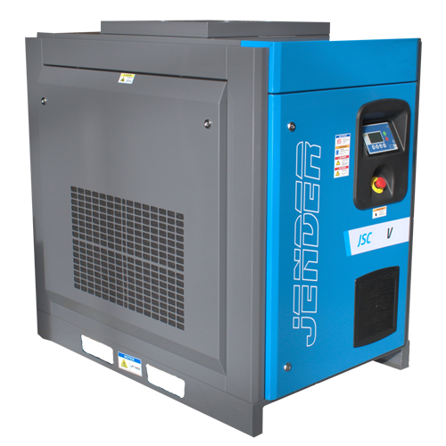

Tres configuraciones según tu instalación

Serie VTD
Compresor sobre tanque con secador
Para pymes, estaciones de servicio y talleres de reparación y pintura. Integra compresor, tanque y secador frigorífico con punto de rocío constante de 3 °C, separador de agua y filtros. El secador tiene control independiente con monitorización Digi-Pro.
Ver serie VTD
Serie V
Variador sobre bastidor, transmisión por correa
La opción cuando ya tienes calderín y tratamiento de aire en la instalación y solo necesitas sustituir o añadir el equipo de compresión.
Ver serie V
Serie VD
Variador con transmisión directa
Para industrias con producción continua a alto rendimiento durante toda la jornada. El acoplamiento directo elimina la correa y sus pérdidas mecánicas, con un coste de servicio hasta un 50 % inferior al de un equipo de correa equivalente.
Ver serie VD